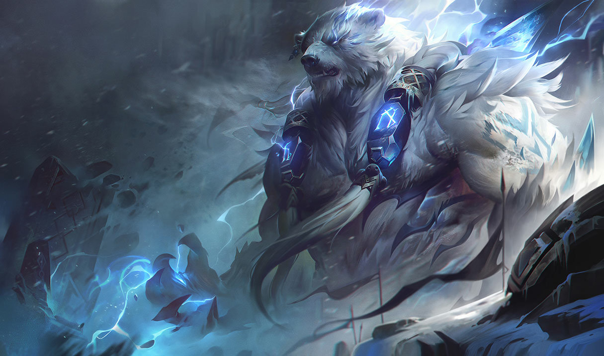

To those who still revere him, the Volibear is the storm made manifest. Destructive, wild, and stubbornly resolute, he existed before mortals walked the Freljord's tundra, and is fiercely protective of the lands that he and his demi-god kin created. Cultivating a deep hatred of civilization and the weakness it brought with it, he now fights to return to the old ways—when the land was untamed, and blood spilled freely—and eagerly battles all who oppose him, with tooth, claw, and thundering domination.